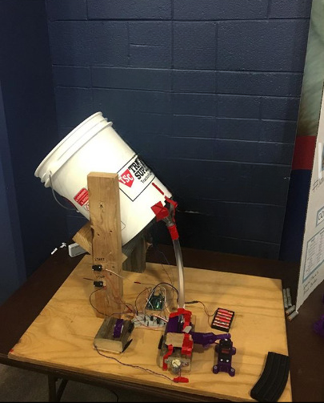
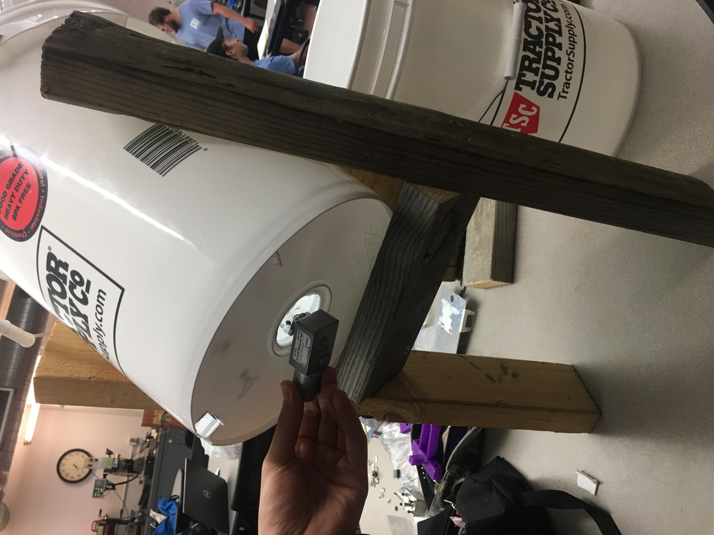

Automatic Magazine Loader

This was my Freshman Design Project at Louisiana Tech University. The inspiration for this design came from two places, an experience loading magazines at a machinegun shoot which resulted in sore thumbs, and a comment by my father, Cris, about magazine loading. The goal of this project was to load 5.56x45mm rounds into a standard AR-15 magazine. One of the parameters of this project for the ENGR 122 class at Louisiana Tech was the use of an Arduino UNO micro controller. Our design utilized a 5 gallon bucket as our "hopper" for the dummy rounds, inside the bucket was a plate with cutouts for the dummy rounds to feed them into a tube that lead to a "pusher" linkage attached to a servo motor to push the rounds into the magazine that was held in place by a "block" which was modeled after an AR-15 lower receiver magazine well (complete with actual AR-15 magazine catch and spring). This project took 2nd place in the Freshman Design Expo.
